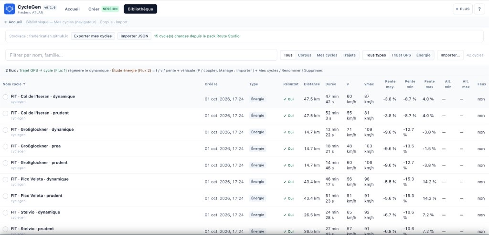

0. De quoi parle-t-on ?
En amont d’un projet véhicule (énergie, freinage, scénarios de montagne), on veut des cycles de conduite liés à une géographie réelle — pas seulement un cycle réglementaire plat. CycleGen enchaîne quatre idées :
- calculer un itinéraire (services de carte publics ou professionnels) ;
- construire, le long de la distance \(s\), une enveloppe de vitesse admissible ;
- faire « conduire » un modèle de conducteur (IDM) sous cette enveloppe ;
- traduire l’accélération en forces, couple et puissance aux roues via un modèle véhicule simple.
L’écran web (Next.js / React) est un atelier : carte, curseurs, graphiques. La physique est calculée côté serveur (Python, via une API FastAPI — interface HTTP légère) — volontairement hors de React.

1. Deux cadences : cher vs bon marché
Recalculer toute la géométrie (itinéraire, altitude, feux) est coûteux : appels réseau, modèles numériques. En revanche, changer le style de conduite ou le véhicule et relancer la dynamique est bon marché — quelques dizaines de millisecondes une fois le corridor déjà en mémoire.
D’où la règle produit : reconstruire le corridor = bouton explicite ; retoucher le conducteur = re-simulation rapide, sans remettre la carte à zéro.
Atelier web (CycleGenShell)
→ client HTTP (api.ts)
analyser l’itinéraire # cher
construire le corridor # cher
démarrer la simulation # bon marché si corridor déjà là
→ serveur Python (routes HTTP minces)
→ assemblage spatial → corridor
→ solveur de conducteur IDM (+ modèle véhicule)
→ profil exportable (courbes, indicateurs)En démo publique, l’interface appelle directement le serveur de calcul hébergé (aujourd’hui sur Render). Pas de modèle de conducteur dans le navigateur.

2. Pourquoi pas un simple PID ?
Un régulateur PID (proportionnel–intégral–dérivé) sur l’erreur de vitesse « poursuit » une consigne. Sur une route accidentée, cela produit souvent des micro-oscillations et des coups de pédale trop secs.
CycleGen utilise l’IDM (Intelligent Driver Model) : à chaque pas de temps, on calcule une accélération continue qui équilibre « je veux aller à \(v_0\) » et « je respecte une distance de sécurité \(s^*\) » :
\[ a_{\mathrm{IDM}}=a_{\max}\left( 1-\left(\frac{v}{v_0}\right)^{\delta} -\left(\frac{s^{*}}{s}\right)^{2} \right) \quad(\delta=4) \] \[ s^{*}=s_0+v\,T+\frac{v\,\Delta v}{2\sqrt{a_{\max}\,b_{\mathrm{comf}}}} \]Ici \(a_{\max}\) est l’accélération max souhaitée, \(b_{\mathrm{comf}}\) le freinage « confort », \(T\) le temps de tête (interdistance), \(s_0\) le gap à l’arrêt, \(s\) la distance au « leader » (feu rouge, ou ralentissement d’enveloppe). La vitesse désirée vient de l’enveloppe spatiale, modulée par le profil conducteur :
\[ v_0=\max\bigl(0{,}1,\; V_{\mathrm{envelope}}(s)\cdot \texttt{speed\_factor}\bigr) \]Eco / Normal / Sport ne changent que ces boutons — pas une autre physique. On peut ajouter un petit bruit d’accélération (suite aléatoire à mémoire courte, type chaîne de Markov) pour la nervosité en roulage libre. Ce bruit est coupé dès qu’on freine fort ou qu’un danger est trop près :
\[ d_{\mathrm{brake}}=\max\!\Bigl(\frac{v^{2}}{2\,b_{\mathrm{comf}}},\,25\Bigr)\quad[\mathrm{m}] \] \[ a=\operatorname{clip}\bigl(a_{\mathrm{IDM}}+a_{\mathrm{noise}},\; -1{,}5\,b_{\mathrm{comf}},\; a_{\max}\bigr) \](bruit forcé à zéro dès que la distance au danger tombe sous \(d_{\mathrm{brake}}\), ou dès que \(a_{\mathrm{IDM}}\le -1\,\mathrm{m/s^2}\).) Puis intégration d’Euler, pas de temps typique \(\Delta t=1\,\mathrm{s}\) :
\[ v\leftarrow v+a\,\Delta t,\qquad s\leftarrow s+v_{\mathrm{old}}\,\Delta t \]# Extrait — calcul de a_IDM (kinematic_solver.py)
free = 1.0 - (v / v0) ** DELTA
dv = v - v_lead
s_star = params.s0 + max(
0.0,
v * params.T
+ (v * dv) / (2.0 * math.sqrt(max(params.a_max * params.b_comf, 1e-6))),
)
return params.a_max * (free - (s_star / gap) ** 2)3. Le corridor : ce que la route autorise
Avant de « conduire », on prépare un objet indexé par la distance parcourue \(s\) (abscisse curviligne) :
\[ \bigl(S,\;\alpha(s),\;V_{\mathrm{legal}},\;V_{\mathrm{traffic}},\;V_{\mathrm{curve}},\;V_{\mathrm{envelope}},\;S_{\mathrm{feux}}\bigr) \]\(V_{\mathrm{legal}}\) vient des limitations / annotations de carte, \(V_{\mathrm{traffic}}\) d’une estimation de fluide (si disponible), \(V_{\mathrm{curve}}\) du confort en virage.
L’altitude brute (modèle numérique de terrain) plonge souvent sous un pont. CycleGen corrige les structures OpenStreetMap (la carte collaborative ouverte — pont / tunnel), lisse l’altitude (filtre Savitzky–Golay, noté SG ci-dessous), puis calcule la pente :
\[ \alpha_i=\operatorname{atan}\!\left(\frac{z^{\mathrm{SG}}_i-z^{\mathrm{SG}}_{i-1}}{S_i-S_{i-1}}\right) \]À l’écran on affiche souvent \(100\cdot\tan\alpha\) en % ; le solveur, lui, travaille en radians. En virage, avec une accélération latérale de confort \(a_y\) (défaut \(2{,}5\,\mathrm{m/s^2}\)) et un rayon local \(R\) :
\[ V_{\mathrm{curve}}(s)=\sqrt{a_y\,R(s)} \] \[ V_{\mathrm{envelope}}(s)=\min\bigl(V_{\mathrm{legal}}(s),\,V_{\mathrm{traffic}}(s),\,V_{\mathrm{curve}}(s)\bigr) \]C’est cette enveloppe — pas une consigne PID — qui borne \(v_0\) du conducteur. Dans l’écran Contraintes, on choisit les sources d’altitude, le lissage, le clamp de pente, puis on lance explicitement « Construire le cycle ».

4. Du mouvement aux forces aux roues
L’IDM propose une accélération de commande \(a_{\mathrm{cmd}}\). Le modèle véhicule borne ensuite ce que la traction et le frein peuvent vraiment faire. Forme du bilan longitudinal :
\[ F_{\mathrm{need}}=m\,a_{\mathrm{cmd}}+F_{\mathrm{road}}+F_{\mathrm{grade}} \] \[ F_{\mathrm{road}}=F_0+F_1\,v_{\mathrm{km/h}}+F_2\,v_{\mathrm{km/h}}^{2},\qquad F_{\mathrm{grade}}=m\,g\,\sin\alpha \]\(F_0,F_1,F_2\) sont les coefficients de road-load (résistance à l’avancement, issus typiquement d’un essai de côte libre). La force réellement appliquée est limitée par la puissance moteur et le couple frein max, puis on reconstruit l’accélération et on passe aux grandeurs de roue :
\[ a=\frac{F_{\mathrm{applied}}-F_{\mathrm{road}}-F_{\mathrm{grade}}}{m} \] \[ T=F\,r_{\mathrm{dyn}},\qquad P=T\,\omega \](\(r_{\mathrm{dyn}}\) rayon dynamique, \(\omega\) vitesse angulaire de roue.)
# Road-load (kinematic_solver.py)
def _road_load_n(v_mps: float, plant: VehiclePlant) -> float:
vk = max(0.0, v_mps) * 3.6 # m/s → km/h
return plant.f0_n + plant.f1_n_per_kph * vk + plant.f2_n_per_kph2 * vk * vkSur la démo publique, le catalogue propose des véhicules proxies (ordres de grandeur BEV — battery electric vehicle — documentés comme non officiels) : Zoé, Leaf, ID.3, Model 3, Ioniq 5, et un compact générique. Exemple générique : \(m=1810\,\mathrm{kg}\), \(F_0=102\,\mathrm{N}\), \(r_{\mathrm{dyn}}=0{,}322\,\mathrm{m}\), \(P=150\,\mathrm{kW}\). Les road-loads constructeur internes ne sont pas dans le catalogue public.
5. Des routes qui font mal (volontairement)
Pour éprouver freinage et retenue, la démo embarque des packs alpins déjà remplis (géométrie + corridor + un premier profil) :
- Pico Veleta (Espagne) — longue descente / montée asphaltée côté Sierra Nevada.
- Grossglockner (Autriche) — descente alpine typée, forte pente sur une quinzaine de kilomètres.
- Iseran / Stelvio — mêmes mécaniques, autres géométries.
À l’ouverture, les quatre écrans du parcours (Trajet → Contraintes → Conducteur → Cycle) sont déjà peuplés. Relancer une génération live, en revanche, passe bien par le serveur de calcul.
6. Lire sans se noyer
Neuf graphes de la même taille, côte à côte, fatiguent. L’étape Cycle privilégie un graphe principal (souvent la vitesse), un bandeau de miniatures pour changer de grandeur (accélération, puissances, couple…), un curseur synchronisé entre la carte et les courbes, et un bandeau de valeurs à l’instant \(t\) (vitesse, enveloppe, accélération max observée, etc.).
L’idée : passer du temps sur le phénomène (suivi d’enveloppe, pic de couple en lacets), pas à réorganiser l’écran.


7. Où ça tourne
- Interface — site statique Next.js sur GitHub Pages (
/CycleGen). - Calcul — service Python FastAPI (conteneur Docker), aujourd’hui sur Render ; possible cold start après inactivité.
- Qualité — tests automatisés côté serveur et parcours navigateur (Playwright) sur la démo live.
8. Ce que CycleGen n’est pas
Ce n’est pas une campagne de mesures terrain, ni une homologation officielle, ni un modèle thermique détaillé de batterie ou de frein à disque. \(V_{\mathrm{curve}}\) exprime un confort latéral, pas la limite d’adhérence pneu. Les bruits de conduite et les véhicules du catalogue démo sont des approximations d’ingénierie : pour une étude critique, on substitue des données constructeur ou des mesures autorisées.